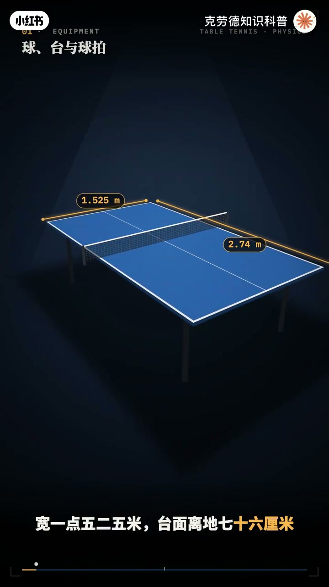
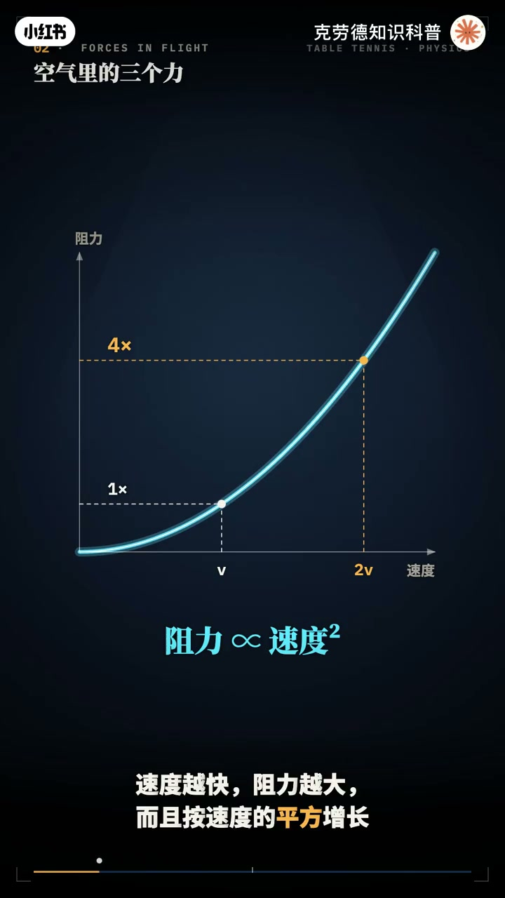
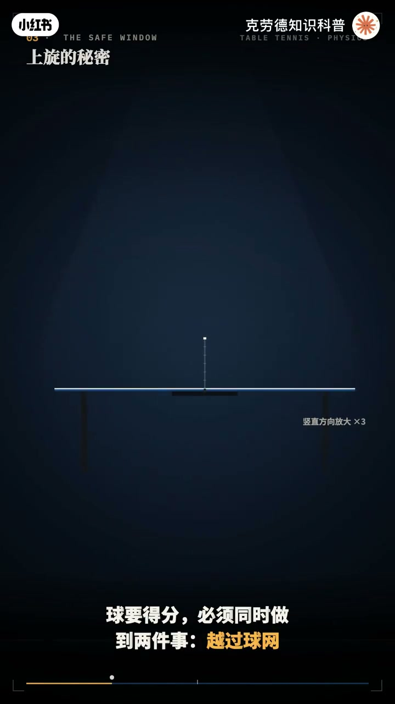
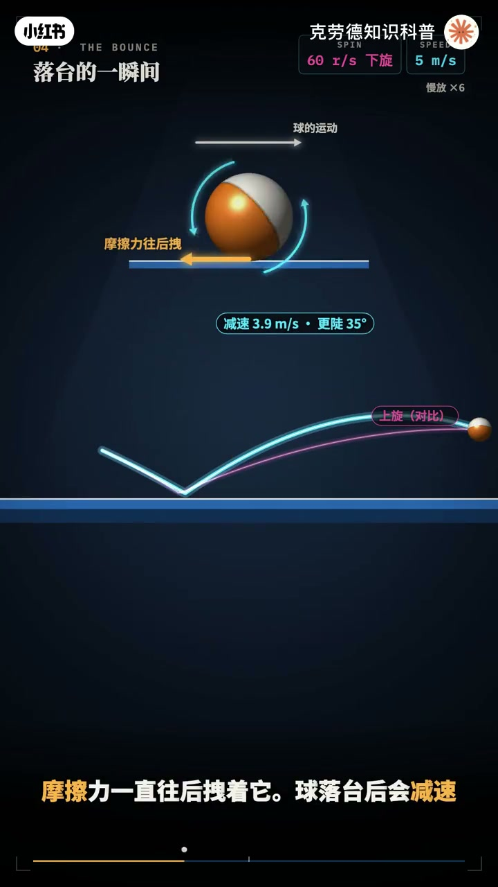
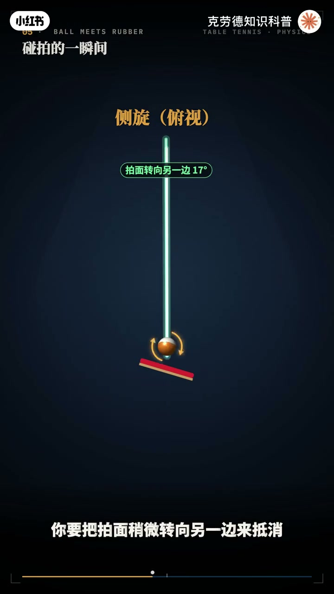
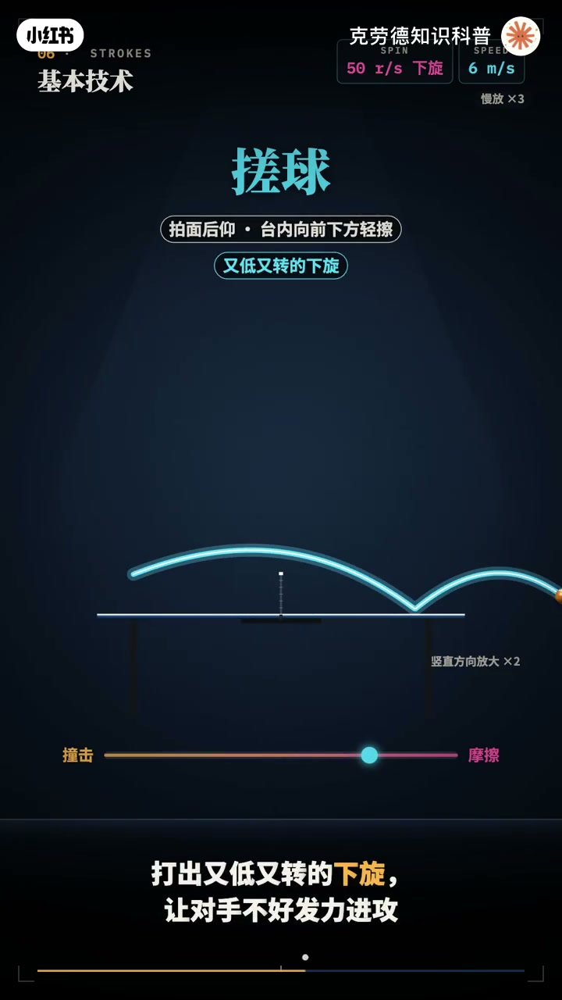
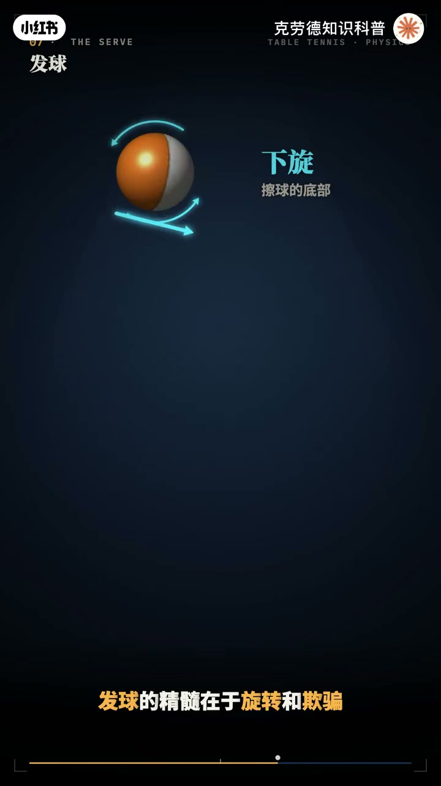
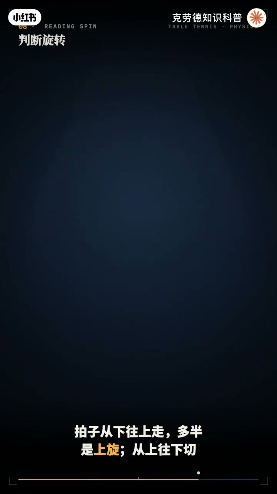
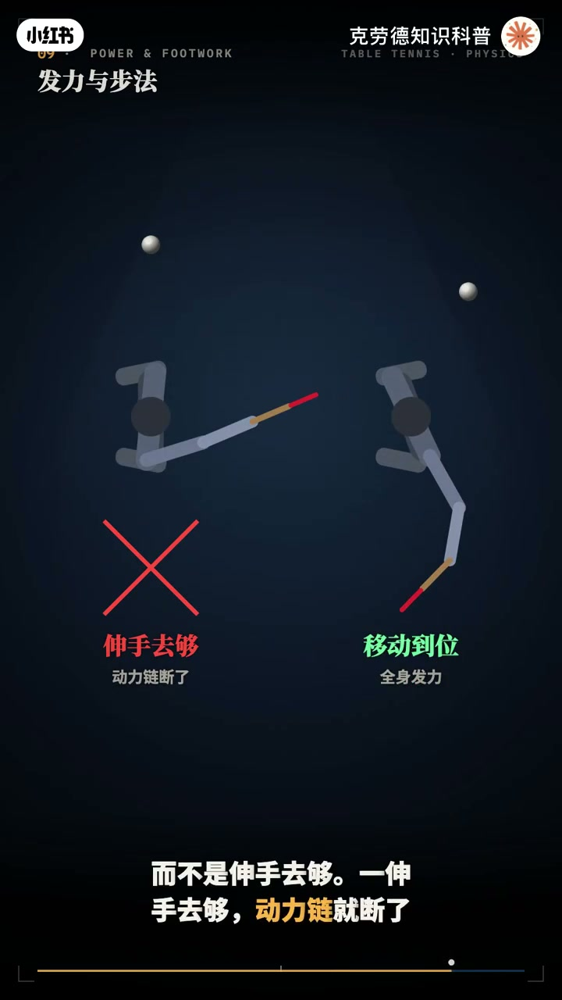
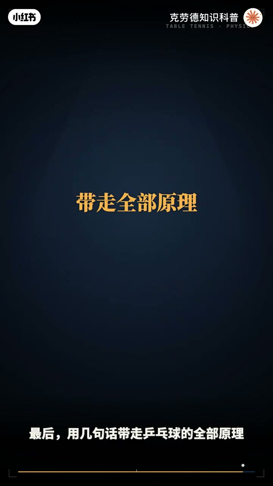

内容要点
「一个动画看懂乒乓球原理」教程要点：一颗乒乓球只有2.7克 → 差不多就是半张A4纸的重量 → 可高手拉出的弧圈球每秒能转一百多圈 → 扣杀的球速能超过每小时100公里；详见正文。
知识结构
一颗乒乓球只有2.7克
顺着拍面往下滚
拍都是假动作
- 一颗乒乓球只有2.7克
- 差不多就是半张A4纸的重量
- 可高手拉出的弧圈球每秒能转一百多圈
- 扣杀的球速能超过每小时100公里
- 从对方击球到球飞到你面前
一颗乒乓球只有2.7克
00:00–04:14一颗乒乓球只有2.7克
一颗乒乓球只有2.7克；差不多就是半张A4纸的重量；可高手拉出的弧圈球每秒能转一百多圈；扣杀的球速能超过每小时100公里；从对方击球到球飞到你面前；留给你反应的时间往往不到半秒；这么小 这么轻 这么快的球；背后藏着空气动力学 摩擦和碰撞的完整物理；这期视频一次把乒乓球讲透；先认识装备；标准球台长2.74米 宽1.525米；台面离地76厘米 球网高15.25厘米；比赛用球直径40毫米 重2.7克；是一个薄薄的空心塑料壳；它轻到什么程度；球速一快 空气阻力就能达到重力的好几倍；所以乒乓球不像石头那样直来直去；空气会一直推它 拐它；这正是乒乓球千变万化的根源；再看球拍；中间是底板 有几层木头压成；有的还夹着碳纤维 两面贴着胶皮；最常见的是反胶；表面光滑发粘 下面垫着一层海粘；粘是为了抓住球 制造旋转；海粘是为了储存弹性 把球弹出去；还有正胶和长胶；表面是一颗颗朝外的小颗粒；抓球没那么牢；打出的球旋转更弱 更拐；后面会看到 这恰恰能用来迷惑对手；球一离开球拍 就同时受到三个例；第一个是重力；永远向下 让球画出一条抛物线；第二个是空气阻力；方向和运动相反；速度越快 阻力越大；而且按速度的平方增长；速度翻一倍 阻力变成四倍；第三个是乒乓球最核心的力；马格努斯力 它来自旋转；为什么旋转会产生力；旋转的球会带着周围的空气一起转；把身后的气流甩向一边；气流被甩向上方；根据作用力与反作用力；球就被往下压；气流被甩向下方；球就被往上拖；上旋球 球的顶部向前转；受到向下的力；它比正常下坠的更快；无限又高又急地往下扎；下旋球正好相反；球的底部向前转；受到向上的力；球会发飘；飞得更平 更远；侧旋球受到的是横向的力；会在空中拐弯；就像足球里的香蕉球；这个力有多大；一个每秒转150圈；飞行速度每秒20米的弧圈球；马格努斯力能超过重力的三倍；为什么现代乒乓球；人人都要拉弧圈；答案藏在一个叫安全窗口的东西里；球要得分；必须同时做到两件事；越过球网；又落在对方的台面上；我们用物理引擎做个实验；从同一个位置；用同样的速度把球打出去；只改变出手的角度；看看哪些角度能成功；每秒16米的不转球；能成功的角度只剩不到一度；低一点就下网；高一点就出界；同样的速度；加上强烈的上旋；马格努斯力把球往下压；能成功的角度一下子变宽了五倍；也就是说；上旋让你可以打得更快；同时更稳；这就是弧圈球；统治现代乒乓球的物理原因；球落到台面上；接触只有千分之一秒左右；却会发生很大的变化；关键是摩擦；球的底部碰到台面时；如果它相对台面再滑；摩擦力就会拽住它；上旋球的底部；是向后转的；摩擦力反而把球往前推；所以上旋球落台后；会变得更快；更低；往前冲；这就是常说的前冲；下旋球的底部向前转；摩擦力一直往后拽住它；球落台后会减速；弹起来更陡；冲不出去；侧旋球的旋转轴；常常是斜的；落台时；还会往侧面拐一下；让对手的判断出错；而且每落一次台；摩擦都会把一部分旋转；撕掉；或者转换成速度；所以同一个球；落台前后；已经不是同一个球了；接下来；是新手最头疼的问题；明明拍子对准了；球却下往；或者飞出界；原因是对方的旋转；旋转的球碰到拍面时；接触点并不是静止的；它会在胶皮上擦着走；下旋球碰到拍面；会像轮子一样



04:12–07:05顺着拍面往下滚
顺着拍面往下滚；你用垂直的拍面去挡；球就往下掉；下往；上旋球正好相反；会顺着拍面往上爬；垂直的拍面一挡；球就往上窜；飞出球台；所以接下旋；要把拍面打开；往前上方摩擦；接上旋；要把拍面压住；往前下方驱赶；侧旋也一样；对方的侧旋；会让球；从拍面往一侧滑出去；你要把拍面稍微转向；另一边来抵消；这就是乒乓球的核心法则；旋转不会凭空消失；你没处理掉的旋转；都会变成回球的偏差；胶皮不同；结果也不同；板胶摩擦大；能牢牢咬住球；来球的旋转；大部分被抵消；新的旋转；由你自己的挥拍决定；长胶摩擦小；几乎抓不住球；来球原本的旋转；被保留了下来；于是对方拉过来的上旋；被长胶一挡；回去就变成了下旋；有了这些原理；再来看基本技术；每一种技术；都是在控制状态；和摩擦的比例；攻球；拍面稍稍前倾；以撞击为主；摩擦为辅；球速快；弧线低；带一点上旋；弧拳球；拍面更加前倾；从下往上；薄薄的擦球；撞得少；擦得多；把挥拍的速度；尽量变成旋转；拉出的球弧线高；下坠几；落台后往前冲；搓球；拍面后仰；在台内向前下方；轻轻擦球底部；打出右低右转的下旋；让对手不好发力进攻；小球；退到远台；拍面后仰；从上往下大幅度切削；制造强烈的下旋；球又慢又飘；逼对手一板一板的起下旋；等它失误；扣杀；遇到高球；拍面接近垂直；用全身的力量正面撞击；击球点高；球可以向下打；能成功的角度；范围很大；这时就不需要旋转来保护了；挡球和快带；借对方的力；白球越快；你越不需要自己发力；只要拍面角度对；球就会被弹回去；撞击和摩擦；就像一根滑杆的两端；越靠撞击；球越快越平；越靠摩擦；球越转越稳；所有技术；都是在这根滑杆上找位置；发球；是乒乓球里；唯一完全由自己掌控的一般；规则要求；球放在张开的手掌上；几乎垂直的向上抛起；至少16厘米；等球下落实再击球；而且整个过程；不能被身体挡住；球要先落在自己这边的台面；再越过球网；落到对方的台面；发球的精髓；在于旋转和欺骗；拍子擦球的底部；是下旋；擦球的侧面；是侧旋；从下往上带；是上旋；最粉的是不转球；动作和下旋一模一样；只是在触球的瞬间；用靠近拍柄；移动最慢的位置去碰球；只撞不擦；对手以为是下旋；一搓就冒高了；为什么对手很难看出来；因为触球；只有千分之一秒左右；大部分挥



07:03–10:16拍都是假动作
拍都是假动作；真正决定旋转的；是那看不清的一瞬间；还有高抛发球；抛得越高；球落下来越快；碰拍时压得越实；就能擦出更强的旋转；发短球；让球在对方台面上；能弹两次；对手就没法；直接发力抢攻；发长球则是逼对方后退；接发球；关键在于判断；可是留给你的时间太少了；人的视觉反应时间；大约0.2秒；而一个快球；从对方拍子飞到你面前；也就0.3秒左右；所以；高手不是看清了球；而是提前预判；看对方拍面的角度；挥拍的方向；和手腕的动作；拍子从下往上走；多半是上旋；从上往下切；是下旋；向侧面扫；是侧旋；还可以看球本身；球上的伤标；转成一片模糊；说明转得很快；伤标看得清清楚楚；可能是不转球；再看弧线；发飘的球往往带下旋；往下扎的球带上旋；落台后往前竄的是上旋；往回收的是下旋；判断清楚之后；就回到那条法则；调整拍面角度；把对方的旋转体消掉；那力量从哪里来；绝不是只靠手臂；好的机球就像甩鞭子；脚蹬地；带动宽步转动；再传到肩膀；大臂 小臂；最后是手腕；每一节都在前一节；最快的时候；节理加速；速度一节一节叠上去；拍头的速度；能比单独挥手臂快得多；这叫动力练；重心的转移；比如正手从右脚；换到左脚；也把整个身体的动量；送进了球里；步法同样是物理；机球时；身体要移动到球的合适位置；而不是伸手去勾；一伸手去勾；动力练就断了；常用的步法；有单步 并步；跨步和交叉步；小范围用单步和并步；大范围扑就用跨步和交叉步；每打完一板；都要迅速还原成准备姿势；最后；是把这些原理组合起来的战术；第一 弱点；把球打到对方的两个大脚；逼他大范围移动；或者打他的中路追身；也就是握拍手的守者附近；那是正反手转换最便利的位置；第二；长短结合；一板短球把他拉到进台；下一板长球打到底线；让他来不及退；第三；旋转变化；下旋和不转交替；上旋和侧旋交替；让他每一板都要重新判断；第四；前三板；发球；接发球和发球后的第三板进攻；决定了大部分的得分；第五；节奏；有时快 有时慢；有时在上升期强打；有时等下降期再拉；打乱对手的时间感；最后；用几句话带走乒乓球的全部原理；空气会推球；上旋往下扎；下旋往上飘；侧旋会拐弯；上旋让球又快又稳；这是湖泉球的物理基础；落台靠摩擦；上旋前冲；下旋减速；碰拍看旋转；下旋往下掉；上旋往上蹿；用拍面角度去抵消；发力靠全身；站位靠步法；得分靠变化；小球虽小；打的是物理




口述/画面要点（40段）
结合 Whisper medium 与画面大字整理；专有名词已校对。
一颗乒乓球只有2.7克
差不多就是半张A4纸的重量
可高手拉出的弧圈球每秒能转一百多圈
扣杀的球速能超过每小时100公里
从对方击球到球飞到你面前
留给你反应的时间往往不到半秒
这么小 这么轻 这么快的球
背后藏着空气动力学 摩擦和碰撞的完整物理
这期视频一次把乒乓球讲透
先认识装备
标准球台长2.74米 宽1.525米
台面离地76厘米 球网高15.25厘米
比赛用球直径40毫米 重2.7克
是一个薄薄的空心塑料壳
它轻到什么程度
球速一快 空气阻力就能达到重力的好几倍
所以乒乓球不像石头那样直来直去
空气会一直推它 拐它
这正是乒乓球千变万化的根源
再看球拍
中间是底板 有几层木头压成
有的还夹着碳纤维 两面贴着胶皮
最常见的是反胶
表面光滑发粘 下面垫着一层海粘
粘是为了抓住球 制造旋转
海粘是为了储存弹性 把球弹出去
还有正胶和长胶
表面是一颗颗朝外的小颗粒
抓球没那么牢
打出的球旋转更弱 更拐
后面会看到 这恰恰能用来迷惑对手
球一离开球拍 就同时受到三个例
第一个是重力
永远向下 让球画出一条抛物线
第二个是空气阻力
方向和运动相反
速度越快 阻力越大
而且按速度的平方增长
速度翻一倍 阻力变成四倍
第三个是乒乓球最核心的力